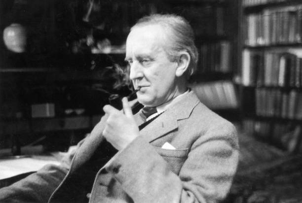

¿Quien es el creador de la Tierra Media
Nació John Ronald Reuel Tolkien el 3 de enero de 1892 en Bloemfontein, Estado Libre de Orange, Sudáfrica, donde su padre trabajaba como ingeniero. Sin embargo, su infancia transcurrió principalmente en Inglaterra, después de que su familia se mudara a Birmingham en 1895.
Tolkien estudió en la King Edward’s School y más tarde en la Exeter College, Oxford, donde se graduó en filología anglosajona en 1915. Durante la Primera Guerra Mundial, sirvió en el ejército británico y fue herido en la batalla del Somme
Después de la guerra, Tolkien se convirtió en profesor de lengua y literatura anglosajona en la Universidad de Oxford, donde se especializó en la época medieval. En este período, publicó ensayos sobre literatura medieval, como “Sir Gawain y el caballero verde” (1925) y “Beowulf” (1936).
En la década de 1930, Tolkien comenzó a crear una personal mitología inspirada en la saga artúrica y la épica medieval anglosajona, plagada de elementos fantásticos y seres imaginarios. Este proyecto culminó en la creación de El hobbit (1937) y la trilogía de El señor de los anillos (1954-1955), que se convirtió en un libro de culto y dio lugar al género de la “alta fantasía”.
Además de su obra literaria, Tolkien también trabajó en la creación de lenguas ficticias, como el quenya y el sindarin, que se utilizan en sus novelas. Tras la publicación de El señor de los anillos, Tolkien trabajó en The Silmarillion, un poema épico que explora la mitología de su mundo fantástico, aunque no fue publicado hasta después de su muerte en 1977.
Tolkien falleció el 2 de septiembre de 1973 en Bournemouth, Inglaterra, a la edad de 81 años. Su legado como escritor y lingüista ha sido ampliamente reconocido y sigue siendo una figura importante en la literatura fantástica y la creación de mundos imaginarios.
